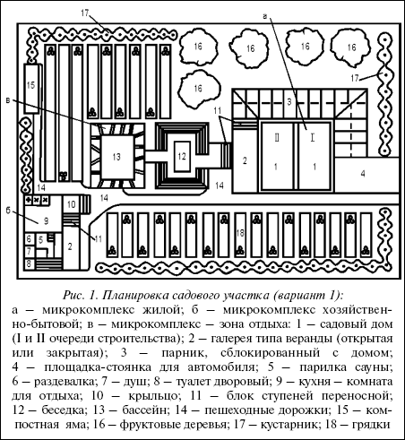
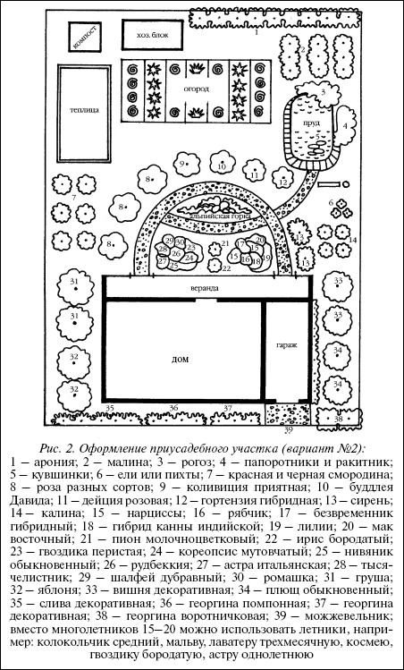
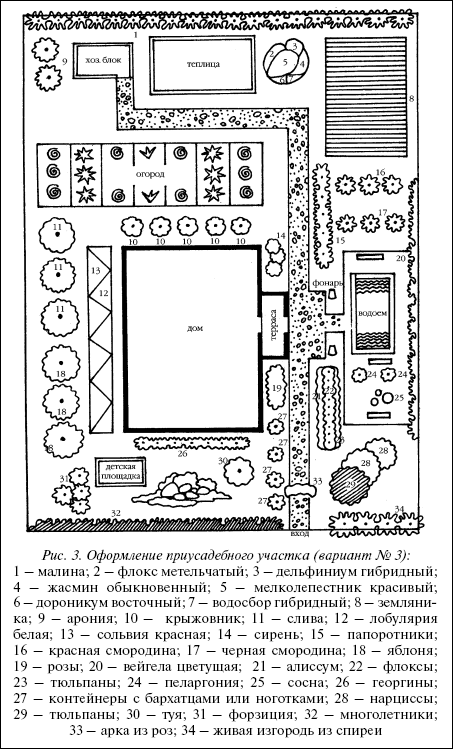
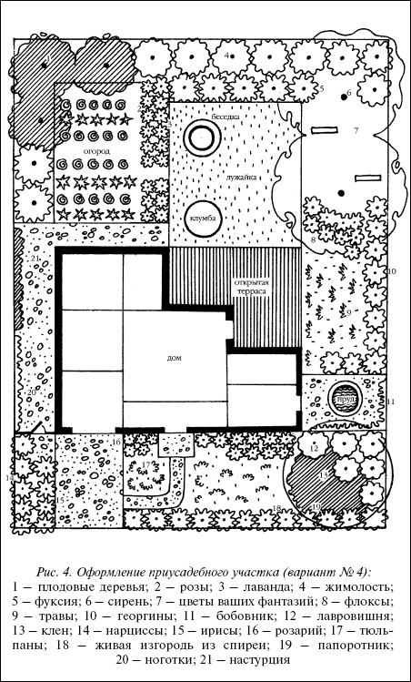
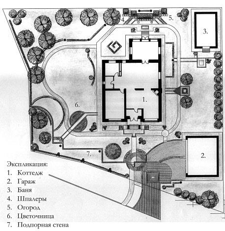
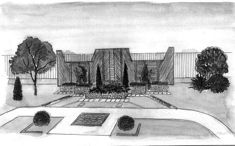
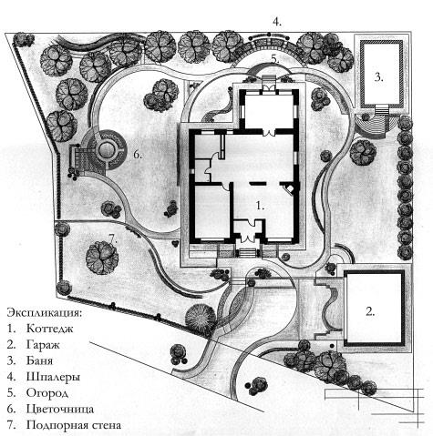
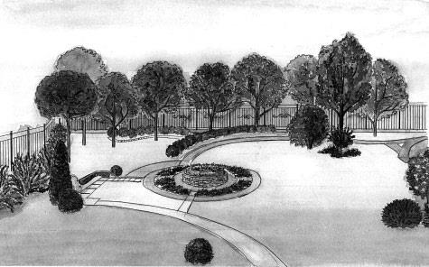

Расположение построек на участке

По материалам книги Валентины Назаровой
" Современные хозяйственные постройки и обустройство участкаю "
А также из других источников Интернет
Уважаемый Читатель - после ознакомления с Книгой
рекомендую Вам заказать ее бумажное издание.
Эта книга поможет всем защитить свой загородный дом и участок от внешнего проникновения, а также красиво обустроить его периметр, правильно построить перголу, беседку, сделать удобный навес или соорудить альпийскую горку.
Современный индивидуальный дом, расположенный на приусадебном участке, – это сложный жилищно-бытовой комплекс, который устраивает людей, его населяющих, ровно настолько, насколько в нем предусмотрены элементы жизнеобеспечения: норма жилой площади в расчете на одного члена семьи, планировка помещений, расположение служб, водо-, газо– и электроснабжения, надворные сооружения, озеленение приусадебного участка, расположение зон отдыха и т. д.

Рис. 1. Планировка садового участка (вариант 1):
а – микрокомплекс жилой; б – микрокомплекс хозяйственно-бытовой; в – микрокомплекс – зона отдыха: 1 – садовый дом (I и II очереди строительства); 2 – галерея типа веранды (открытая или закрытая); 3 – парник, сблокированный с домом; 4 – площадка-стоянка для автомобиля; 5 – парилка сауны; 6 – раздевалка; 7 – душ; 8 – туалет дворовый; 9 – кухня – комната для отдыха; 10 – крыльцо; 11 – блок ступеней переносной; 12 – беседка; 13 – бассейн; 14 – пешеходные дорожки; 15 – компостная яма; 16 – фруктовые деревья; 17 – кустарник; 18 – грядки
Хотелось бы заметить, что поэтапность строительства объектов зависит от финансовых возможностей застройщика.
Требование
Необходимым требованием является то, что строительство объектов не должно мешать друг другу и основное – не вести к их перестройке и дополнительным трудозатратам из-за неправильно выбранной поэтапности технологии строительства. Можно, конечно, провести отделочные работы, а потом электропроводку, но такой подход заставит вас вторично повторять отделочные работы.
Для размещения необходимых для жизни и отдыха строений, сада и огорода вначале нужно четко продумать и затем – главное – осуществить разумное зонирование территории, компактно размещая в каждой зоне по возможности все объекты, тяготеющие к ней по своему назначению:
• жилая зона (жилой дом);
• зона приусадебных хозяйственных служб (хозблок, погреб, гараж, кухня-столовая, подвал, туалет, колодец и пр.);
• зона отдыха (детская площадка декоративный бассейн, баня, сауна, душ, цветочницы, клумбы, стенки, навесы, песочницы и пр.);
• садово-огородная зона (сад, огород, теплицы, парники и пр.).

Рис. 2. Оформление приусадебного участка (вариант № 2):
1 – арония; 2 – малина; 3 – рогоз; 4 – папоротники и ракитник; 5 – кувшинки; 6 – ели или пихты; 7 – красная и черная смородина; 8 – роза разных сортов; 9 – коливиция приятная; 10 – буддлея Давида; 11 – дейция розовая; 12 – гортензия гибридная; 13 – сирень; 14 – калина; 15 – нарциссы; 16 – рябчик; 17 – безвременник гибридный; 18 – гибрид канны индийской; 19 – лилии; 20 – мак восточный; 21 – пион молочноцветковый; 22 – ирис бородатый; 23 – гвоздика перистая; 24 – кореопсис мутовчатый; 25 – нивяник обыкновенный; 26 – рудбеккия; 27 – астра итальянская; 28 – тысячелистник; 29 – шалфей дубравный; 30 – ромашка; 31 – груша; 32 – яблоня; 33 – вишня декоративная; 34 – плющ обыкновенный; 35 – слива декоративная; 36 – георгина помпонная; 37 – георгина декоративная; 38 – георгина воротничковая; 39 – можжевельник; вместо многолетников 15–20 можно использовать летники, например: колокольчик средний, мальву, лаватеру трехмесячную, космею, гвоздику бородатую, астру однолетнюю
Примеры оформления территорииВнимание
Для эффективного решения планировки участка следует обеспечить:
• наиболее рациональное размещение функциональных зон инфраструктуры (строительные объекты, зоны отдыха, пешеходные дорожки, фруктовые деревья, грядки, газоны и т. д.);
• минимальный отвод земли под весь комплекс застройки и пешеходные дорожки;
• кратчайшие расстояния для перемещения между постройками;
• если участок требует осушения, необходимо вокруг него выкопать с уклоном мелиоративные канавы глубиной до уровня грунтовых вод. Воду отводят в специально выбранные пониженные места;
• хорошо благоустроенным участком считается такой, на котором при максимальной полезной площади постройки сохраняется большая удельная площадь под зеленые насаждения (рис.2).
При обдумывании оформления участка и цветника рекомендуется начертить на листе бумаги план с существующими и планируемыми постройками, деревьями, кустарниками, дорожками, детскими или игровыми площадками, водоемами и т. д.
В зависимости от местоположения на участке основного здания можно планировать разбивку цветника и посадку кустарников и деревьев.
Если ваш дом стоит недалеко от дороги, то лучше спрятать его от шума и уличной пыли за кустами, живой изгородью или высокими цветами.

Рис. 3. Оформление приусадебного участка (вариант № 3):
1 – малина; 2 – флокс метельчатый; 3 – дельфиниум гибридный; 4 – жасмин обыкновенный; 5 – мелколепестник красивый; 6 – дороникум восточный; 7 – водосбор гибридный; 8 – земляника; 9 – арония; 10 – крыжовник; 11 – слива; 12 – лобулярия белая; 13 – сольвия красная; 14 – сирень; 15 – папоротники; 16 – красная смородина; 17 – черная смородина; 18 – яблоня; 19 – розы; 20 – вейгела цветущая; 21 – алиссум; 22 – флоксы; 23 – тюльпаны; 24 – пеларгония; 25 – сосна; 26 – георгины; 27 – контейнеры с бархатцами или ноготками; 28 – нарциссы; 29 – тюльпаны; 30 – туя; 31 – форзиция; 32 – многолетники; 33 – арка из роз; 34 – живая изгородь из спиреи

Рис. 4. Оформление приусадебного участка (вариант № 4):
1 – плодовые деревья; 2 – розы; 3 – лаванда; 4 – жимолость; 5 – фуксия; 6 – сирень; 7 – цветы ваших фантазий; 8 – флоксы; 9 – травы; 10 – георгины; 11 – бобовник; 12 – лавровишня; 13 – клен; 14 – нарциссы; 15 – ирисы; 16 – розарий; 17 – тюльпаны; 18 – живая изгородь из спиреи; 19 – папоротник; 20 – ноготки; 21 – настурция


Вдоль дорожки, ведущей к дому, разумно будет посадить цветы.
Если ваш сад расположился в глубине участка, то место перед домом отводят под цветники, с учетом северной и южной стороны. Когда постройка находится в центре участка, перед ней разбивают цветник, а за ней сажают овощи или плодовые деревья.
Совет
Планировка участка должна быть удобной для возделывания различных растений и отдыха. Все участки сада соединяют удобными проходами.
Основные дорожки не должны в ширину превышать 1–1,5 м, более мелкие (второстепенные) дорожки должны быть 0,8–1,0 м. Лучше всего, если дорожки будут покрыты бетонными плитами, битым красным кирпичом, щебенкой или мелкой галькой. Дорожки можно сделать прямыми и изогнутыми.
Желательно, чтобы окна дома, веранда и терраса выходили на юг.
Грядки должны находиться на хорошо освещенной территории. Плодовые деревья целесообразнее высаживать по периметру участка.
На открытой террасе, огражденной узорчатой решеткой, будет прекрасно смотреться деревянная или плетеная мебель, а за решетчатой оградой имеет смысл посадить декоративные кустарники: сирень, жасмин, рододендроны, вейгелу, розы. Террасу можно увить плющом или виноградом, они дадут приятную в самый знойный день тень.


Вход на территорию сада оформляют нарядно. Для этого можно использовать арки, увитые лианами: клематисом, вьющейся розой или жимолостью.
Дорожку, ведущую от входа к дому, тоже следует украсить цветами. Красиво будет смотреться рабатка из цветов, высаженных в виде полос, или миксбордер. Можно использовать как летники, так и многолетники.
Если вы предусмотрели на своем участке создание водоема, то продумайте заранее его размер, он должен зависеть от величины участка. В основном они бывают небольшими и неглубокими, хотя глубина во многом зависит от почвы, в которой вы будете устраивать водоем.
Чтобы ландшафту не повредил неприглядный вид соседских строений, изолируйте свой участок по всему периметру защитными посадками из плодовых деревьев или живой изгородью многолетних растений.
Внимание
Для того чтобы воплотить в жизнь ваш план садового участка, наметьте колышками все элементы: дорожки, клумбы, грядки, рабатки. Не пренебрегайте точной разметкой участка, «на глазок» вы легко можете ошибиться в размере или провести линию не под тем углом.